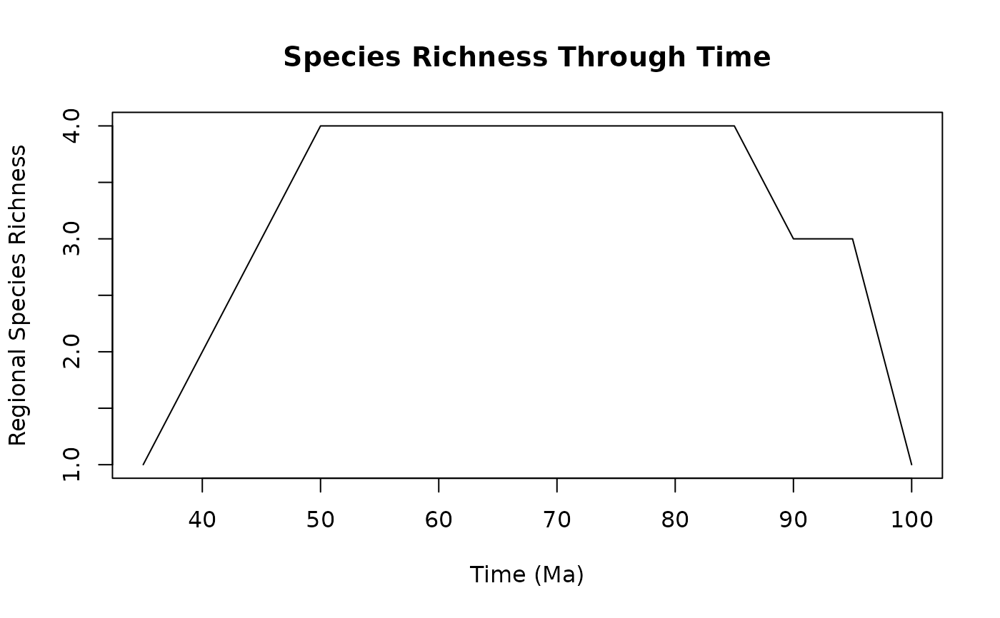

Calculate Regional Species Richness Across Time Slices
clade_regional_coexistence.RdThis function computes the number of species (or lineages) present at the regional scale for each time slice based on species temporal ranges. It divides the temporal range into discrete intervals and counts how many species' longevities (origination to extinction) overlap with each time slice. This provides a time series of regional taxonomic richness through geological time.
Usage
clade_regional_coexistence(
df.TS.TE,
time.slice,
round.digits = 1,
species = "species",
TS = "TS",
TE = "TE"
)Arguments
- df.TS.TE
A data frame containing species temporal data with at least three columns: species names, origination times (TS), and extinction times (TE). Each row represents one species with its temporal range.
- time.slice
Numeric. The time interval (in the same units as TS and TE) between consecutive time slices. Negative values will create backwards intervals from maximum TS to minimum TE.
- round.digits
Integer. The number of decimal places to round time slice values. Default is 1. This affects the precision of temporal binning.
- species
Character. The name of the column in
df.TS.TEcontaining species identifiers. Default is "species".- TS
Character. The name of the column in
df.TS.TEcontaining origination (first appearance) times for each species. Default is "TS".- TE
Character. The name of the column in
df.TS.TEcontaining extinction (last appearance) times for each species. Default is "TE".
Value
A data frame with two columns:
- coexistence
Numeric. The number of species present (coexisting) in each time slice at the regional scale.
- time.slice
Numeric. The time point representing each slice, typically the upper (older) boundary of the time bin.
Details
The function performs the following steps:
Creates a sequence of time slices from the maximum TS to minimum TE
Generates regional co-occurrence matrices using
aux_matrix_regional_coex()For each time slice, identifies species whose temporal ranges overlap with that interval (TS >= time slice AND TE <= time slice)
Counts the number of overlapping species (richness) for each time slice
The term "coexistence" refers to the number of species whose temporal ranges overlap with each time slice, representing standing diversity at the regional scale. This is equivalent to species richness through time when all species in the region are considered.
Note: This function calculates richness at the regional (pool) scale, not
at individual sites. For site-level or assemblage-level richness, see
Assemblage_regional_richness().
Examples
# Create example fossil data with temporal ranges
df_longevities <- data.frame(
species = c("sp1", "sp2", "sp3", "sp4"),
TS = c(100, 98, 98, 85),
TE = c(50, 45, 40, 35)
)
# Calculate regional richness through time with 5 Ma time slices
res_regional_coexistence <- clade_regional_coexistence(
df.TS.TE = df_longevities,
time.slice = 5,
round.digits = 1
)
# View results
head(res_regional_coexistence)
#> coexistence time.slice
#> 1 1 100
#> 2 3 95
#> 3 3 90
#> 4 4 85
#> 5 4 80
#> 6 4 75
# Plot richness through time
plot(res_regional_coexistence$time.slice,
res_regional_coexistence$coexistence,
type = "l",
xlab = "Time (Ma)",
ylab = "Regional Species Richness",
main = "Species Richness Through Time")

# Using custom column names
df_custom <- data.frame(
taxon = c("sp1", "sp2", "sp3"),
first_appearance = c(100, 95, 90),
last_appearance = c(60, 55, 50)
)
res_custom <- clade_regional_coexistence(
df.TS.TE = df_custom,
time.slice = 10,
species = "taxon",
TS = "first_appearance",
TE = "last_appearance"
)